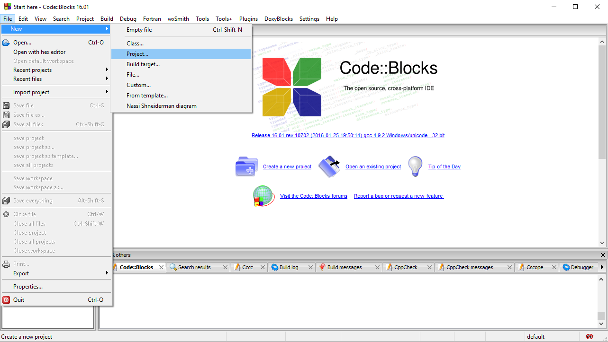
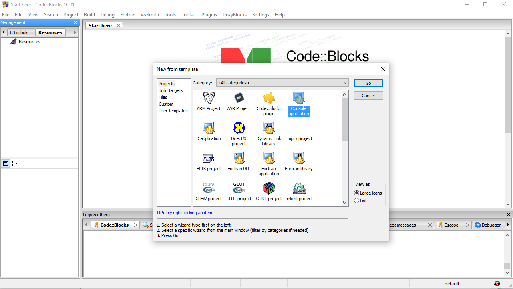
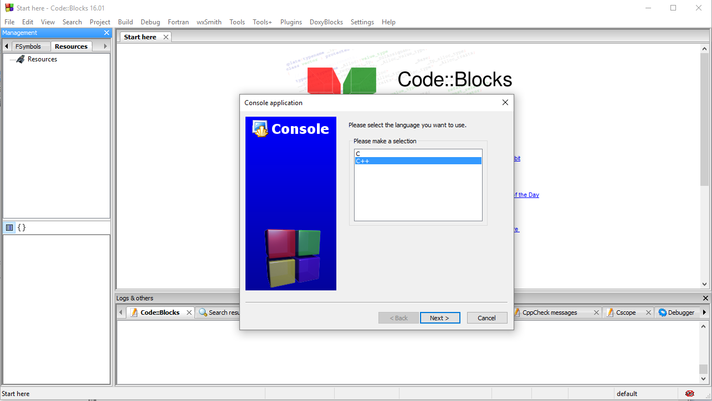
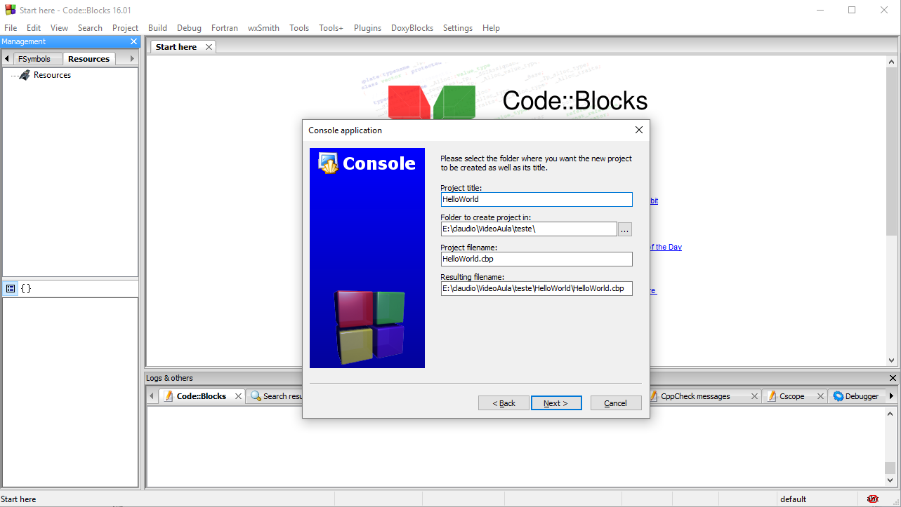
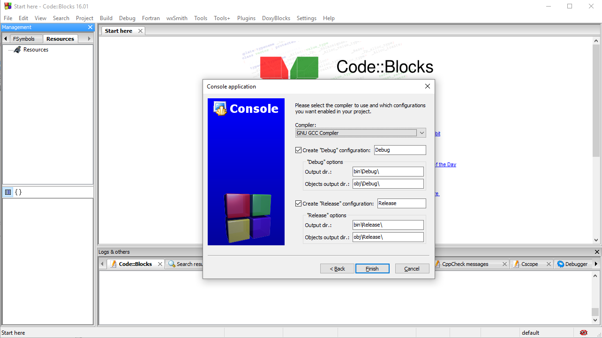
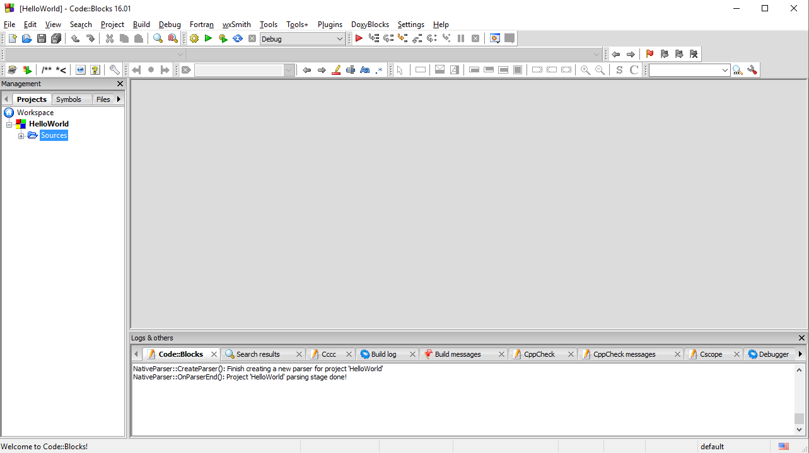
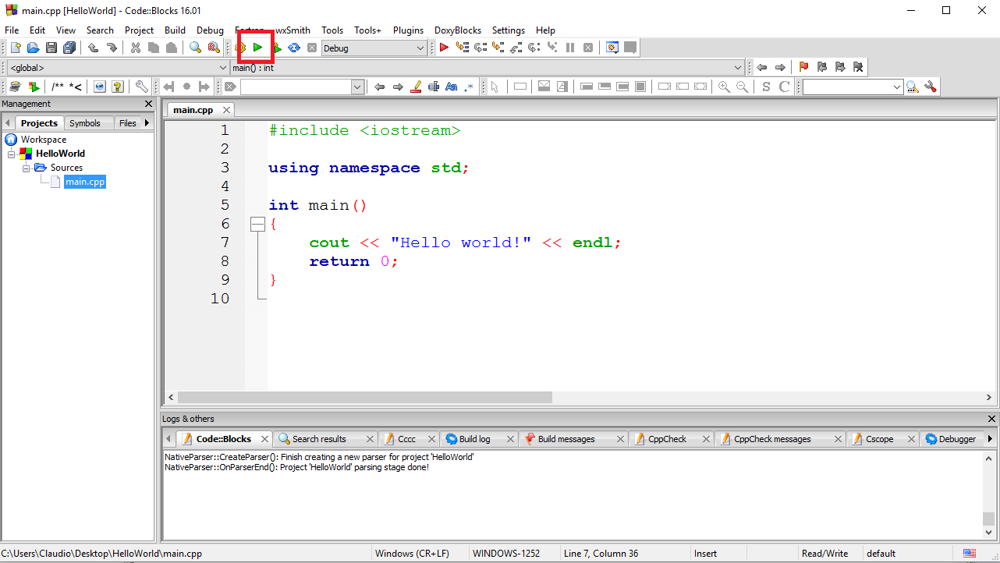
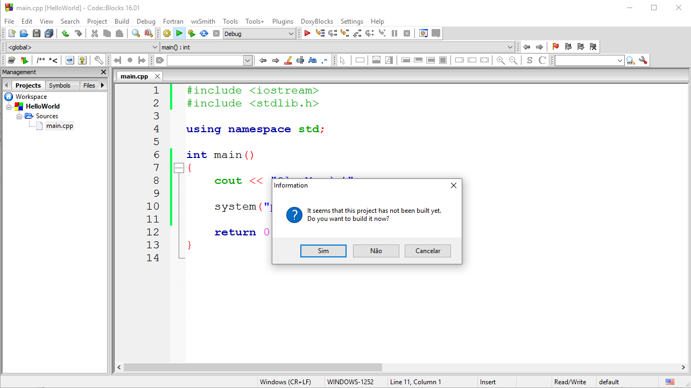
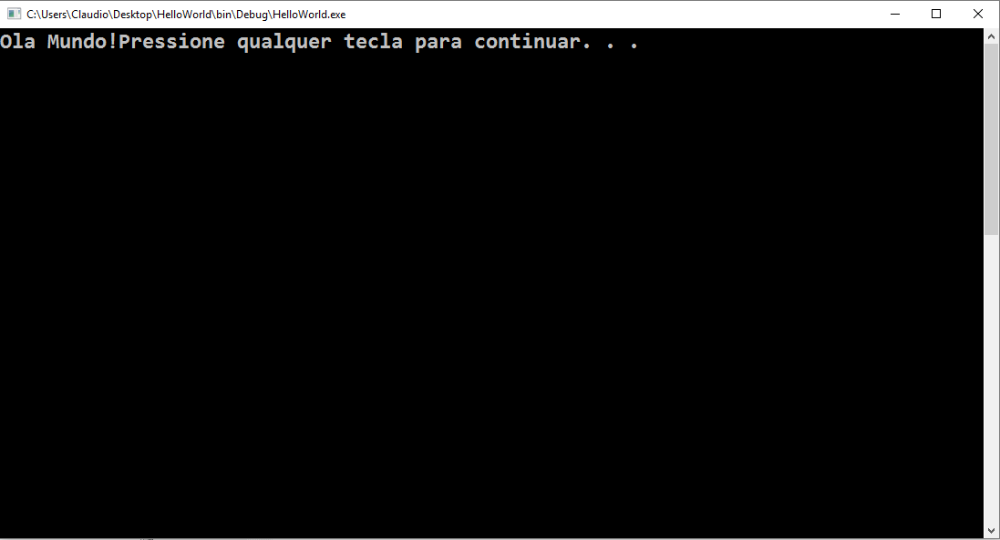

|
Nessa aula faremos nosso primeiro programa em C++, ou seja, iremos desenvolver o famoso Hello World, ou então, o famoso Ola Mundo. |
OLA MUNDO
É comum no estudo de qualquer linguagem o desenvolvimento de um simples código comumente chamado de Hello World, ou então, Ola Mundo. Esse código tem o objetivo de demonstrar o mínimo necessário para o desenvolvimento de uma aplicação com a linguagem.
CRIANDO UM NOVO PROJETO
Para criarmos um novo projeto no Code::Blocks, temos de ir em: File -> New -> Project, conforme a imagem a seguir:
Na tela Project, vamos selecionar a opção, Console Application e então pressionamos o botão Go.
Feito isso, é perguntado se o novo projeto será construído em C ou C++. Vamos selecionar a opção C++ e então pressionamos Next.
Agora, vamos definir o título para o nosso novo projeto. Vamos colocar HelloWorld tudo junto e então, pressionamos Next.
Em seguida, é perguntado qual o compilador que desejamos utilizar. Vamos deixar o compilador padrão e então pressionamos o botão Finish.
Após a finalização para a criação de novos projetos, você terá uma tela semelhante a que temos na imagem a seguir:
A esquerda do vídeo há uma lista, certifique-se de selecionar a aba Project como destacado na imagem a seguir. Feito isso, você terá uma lista contendo uma árvore que contém o projeto que acabamos de criar.
Na imagem abaixo, também é possível ver que a pasta Source está destacada. Observe que esta pasta possui um sinal de "mais" a sua esquerda, como no Windows Explorar. Clique nesse sinal para expandir a árvore e mostrar os outros arquivos do nosso projeto.

Após selecionar a aba Project e expandir os arquivos do projeto, de um duplo clique sobre o item main.cpp contido na pasta Sources que está contida no projeto que acabamos de criar de nome HelloWorld.

Após clicar no arquivo main.cpp, será aberta a View contendo o código gerado por padrão pelo Code::Blocks.
Nesse momento, vamos apagar todo o código gerado por padrão pelo Code::Blocks. Nosso objetivo agora é escrever um programa desde o início e estudar o que estamos fazendo.
O CÓDIGO
Agora, vamos escrever, linha por linha o nosso programa e vamos estudando o que está sendo programado.
A primeira linha que vamos escrever é para inclui uma biblioteca em nosso programa. Bibliotecas contém Classes, funções, constantes e muitos outros códigos. Todo programa que desenvolvermos iremos utilizar diversas bibliotecas.
#include <iostream>
No trecho de código acima, estamos incluindo o arquivo <iostream>. A instrução #include, que em Português significa incluir, diz para o C++ importar o arquivo cujo nome está a sua frente. Nesse momento não estudaremos a inclusão de arquivos e bibliotecas, porém, tenha em mente que dessa forma, estaremos utilizando um conjunto de códigos fornecido por padrão pela biblioteca do C++.
Feito isso, vamos definir um namespace para não precisar a todo momento se referir ao mesmo.
using namespace std;
Na linha de código acima, utilizamos a instrução using, que em Português significa utilizar, dizendo ao C++ que iremos fazer uso de um namespace de nome std.
Um namespace é semelhante ao PATH de arquivo, ou seja, cada arquivo em nossa estrutura de pastas possui uma PATH que o identifica, por exemplo: C:\pasta1\arquivoX.ext, como podemos ver, temos um arquivo de nome arquivoX.ext cujo PATH é C:\pasta1\. O funcionamento do PATH do arquivo é a namespace num código C++. Porém, uma namespace não é necessariamente um caminho para um arquivo, as vezes, o namespace é o caminho mais o nome da classe em C++.
Revisando. A instrução using diz que iremos utilizar uma namespace de nome std. O nome std vem de standard, que significa em Português, padrão. Ou seja, estamos dizendo que iremos utilizar a classe de nome std.
Agora, vamos definir o nome da função que TODO programa em C++ deve ter. Em outras palavras, temos que toda aplicação escrita em C++ é iniciada pela função de nome main(), como podemos ver no código a seguir:
int main()
{
}
A palavra int a frente do nome da função principal, diz que a mesma pode retornar um valor do tipo inteiro. Iremos estudar melhor o tipo int nas próximas aulas.
Após definirmos o nome da função, utilizamos um par de parêntesis. Em seguida, utilizamos o caractere chave de abertura e fechamento.
Nesse momento, o que talvez seja de maior importancia, é saber que o código do nosso programa deverá estar entre o par de chaves. Todo par de chaves é chamado de Bloco de Instrução, ou seja, um bloco que contém várias instrução dizendo o que deve ser feito.
Feito isso, vamos escrever a instrução C++ que de fato, imprimirá a frase Ola Mundo no Console.
cout << "Ola Mundo!";
Na linha acima, estamos utilizando o objeto cout, que é um acrônimo de Console Output, que em Português significa, saída padrão, em seguida, utilizamos o operador de inserção << dizendo que o texto a direita deve ser "inserido" no objeto cout. Essa é a forma para escrevermos caracteres na tela.
system("pause");
A linha acima diz para a aplicação ter a sua execução pausada. Se não mandarmos a aplicação parar, a mesma imprimiria caracteres na tela, em seguida finalizaria e a janela seria fechado, ou seja, não seria possível ver o que foi impresso no Console.
Para utilizarmos a instrução acima que manda a aplicação pausar antes de finalizar, será necessário importar a biblioteca de nome stdlib.h. Para isso, vá abaixo da linha #include <iostream> e digite:
#include <iostream>
#include <stdlib.h>
Agora, estamos importando 2 bibliotecas no nosso programa.
Por fim, temos:
return 0;
A última instrução retorna o número zero. Desta forma, estamos finalizando a nossa aplicação e retornado o código 0, dizendo para o SO que a aplicação finalizou normalmente.
Poderíamos, por exemplo, retornar um número que diz ao sistema operacional que ocorreu um erro e o código do erro é o número retornado pela nossa aplicação. Atualmente, essa funcionalidade entrou em desuso, então, tenha em mente que em 99% das vezes retornaremos o código zero e em seguida a aplicação será finalizada.
A seguir, temos o código completo da nossa aplicação.
#include <iostream>
#include <stdlib.h>
int main()
{
cout << "Ola Mundo!";
system("pause")
return 0;
}
Agora, basta executarmos a nossa aplicação. No Code::Blocks, pra você rodar o programa, é necessário pressionar o botão verde, conforme está destacado na imagem a seguir:
A primeira vez em que executarmos nossa aplicação, será perguntado se desejamos construir o nosso programa. Essa é uma mensagem padrão dizendo que os arquivos binários serão gerados e o arquivo executavel gerado.
Pressione o botão "Sim" e então, a aplicação será construída e executada.
Caso a sua aplicação foi executada com sucesso, deverá ser exibido uma tela do DOS semelhante a imagem a seguir:
Na imagem acima, temos inicialmente a frase: "Ola Mundo!" e em seguida a frase "Pressione qualquer tecla para continuar...". A segunda frase sempre será exibida, em toda janela do prompt que for aberta.
O nosso programa deveria ter escrito a frase "Ola Mundo!" e em seguida, quebrado a linha, ou seja, pressionado a tecla Enter. Esse problema será resolvido nas próximas aulas, até porque, estudamos muitos conceitos até esse momento!
Tags curso, cpp, primeiro programa, ola mundo, hello world, blog
Comentários
comments powered by Disqus